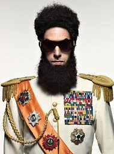

THE DICTATOR
Supreme Leader. President. General. Champion of Wadiya.
DISCOVER ALADEENTHE SUPREME LEADER
Admiral General Aladeen is the fictional dictator of the Republic of Wadiya in the 2012 comedy film The Dictator, portrayed by Sacha Baron Cohen.
Known for his extreme confidence, eccentric personality and authoritarian leadership style, Aladeen finds himself in unfamiliar territory when he travels to New York City.
A VISUAL HISTORY

Click an image above to display it here.
ONLY ALADEEN KNOWS
Click the button to discover a fact about Aladeen.
THE GREATNESS OF ALADEEN
Aladeen has an enormous sense of self-importance and rarely doubts his own greatness.
As Wadiya's ruler, Aladeen exercises absolute political power over his country.
His bizarre behaviour and extravagant lifestyle make him one of comedy's most memorable dictators.
"
I'm not a dictator.